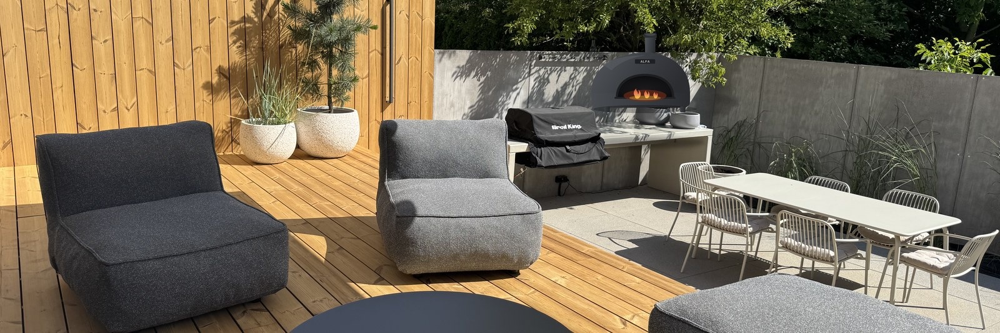

90 sekund
do Neapolu.
Wybierz styl ciasta i pizze na wieczór, a składniki i lista zakupów przeliczą się same — co do grama.
Menu
Wybierz pizze
Każda kulka ciasta to placek ok. 30 cm. Ilości dodatków podane dla jednej pizzy.
Ciasto
Twoje ciasto
Zakupy
Lista zakupów
Plan liczony od pieca wstecz.
Wybierz styl ciasta, datę i źródło ciepła — przepis i harmonogram fermentacji ułożą się same.
Kiedy pieczesz?
Wybierz dzień i godzinę, o której pierwsza pizza ma trafić do pieca, oraz źródło ciepła.
Przepis
